THE SPINAL CORD & Ascending pathways
Objectives
Define spinal cord Describe:
- The external features of the spinal cord
- The spinal nerve
- Parts of the spinal cord
- Organization of spinal gray
- Organization of white matter & tractology (part
SPINAL CORD
- Part of CNS in vertebral canal
- Length: 43-45 cm in adults
- Enlargements: cervical (C3-T2) & lumbar (L1S3)
- Conus medullaris
- Cord termination: L3 (newborn) L1/2 (adults)
- Cauda equina: In the lumbar cistern
SPINAL CORD
- Spinal meninges: dural sac ends at S2 but the dura continues as filum terminale to anchor the cord to the coccyx.
- Epidural space with especially veins
- Subarachnoid space with CSF
SPINAL CORD Anchorage
- Continuity with medulla oblongata
- Spinal nerves
- Filum terminale
- Denticulate ligaments?
SPINAL CORD Transverse section
- Elliptical
- Posterior median sulcus
- Anterior fissure
SPINAL CORD External features
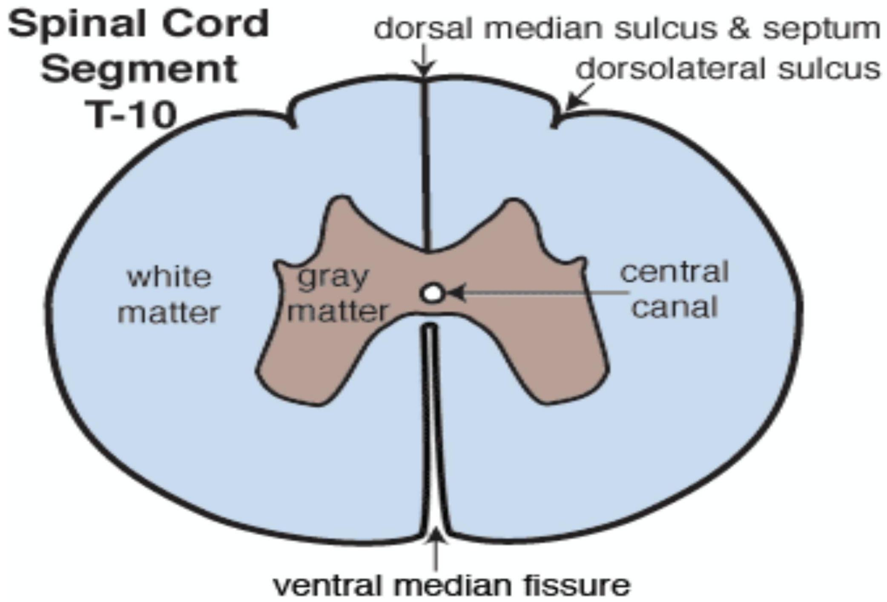
SPINAL CORD
- 31 segments (8 cervical, 12 thoracic, 5 lumbar, 5 sacral & 3 coccygeal fused into 1 usually).
- 31 pairs of spinal nerves form in the intervertebral foramen EXCEPT C1 & C2
SPINAL NERVE
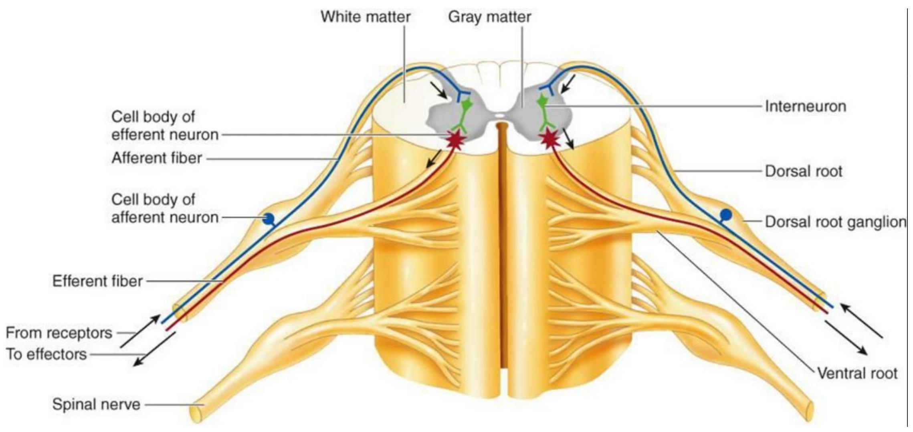
SPINAL NERVE
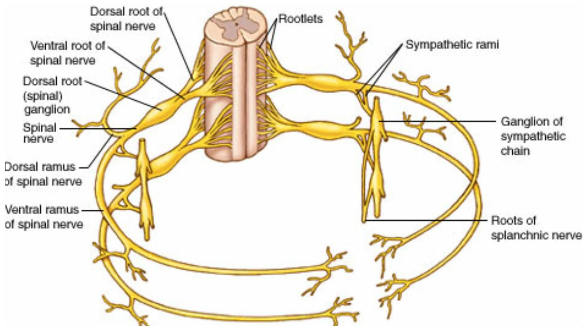
SPINAL NERVE

SPINAL NERVE
Exit in relation to vertebrae
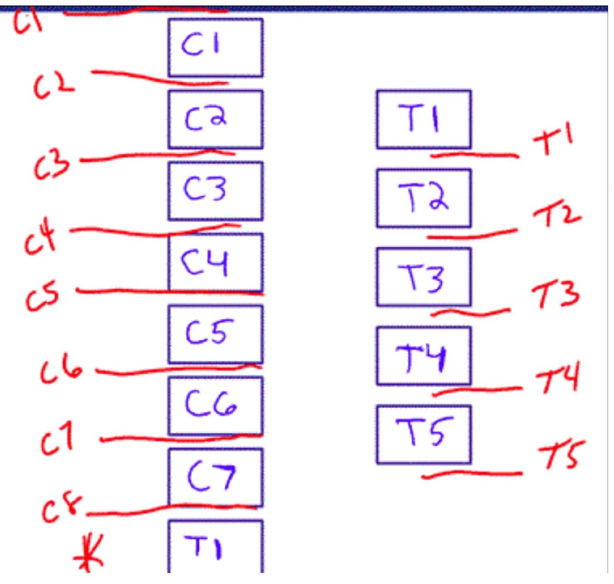SPINAL NERVE Distribution
The Spinal Nerves-
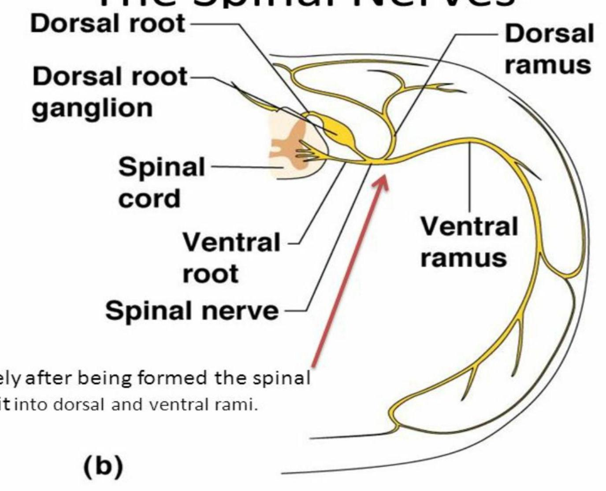Figure 7.25b
SPINAL CORD General organization
- Spinal gray
- White matter
Somatotopical arrangement
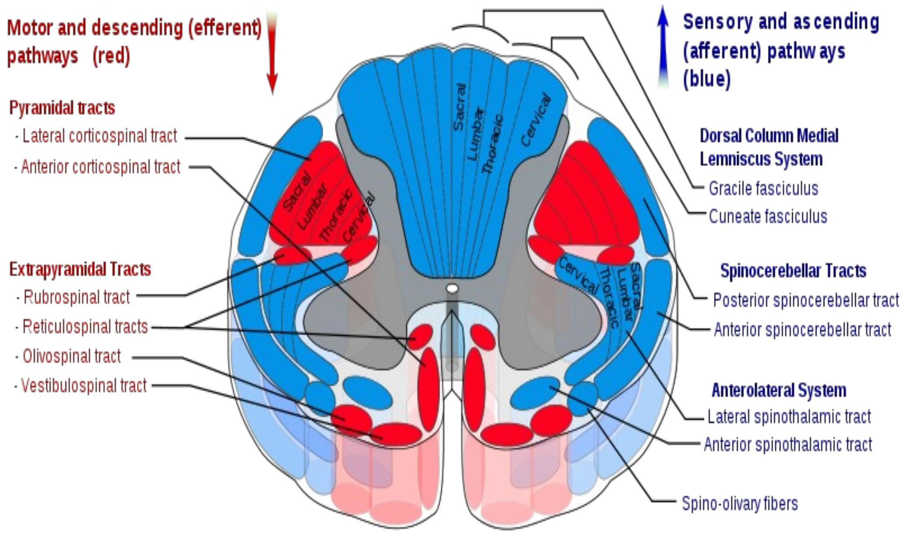
SPINAL GRAY Rexed laminae
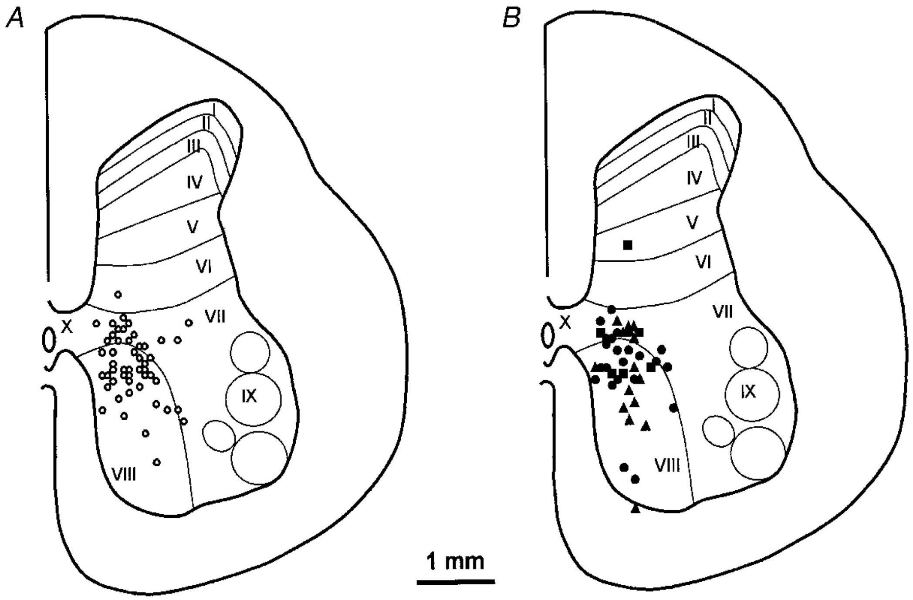
SPINAL GRAY Rexed laminae
- Lamina II (part of I & III): SUBSTANTIA GELATINOSA
- Lamina VII:
- Intermediomedial (T1-L2> Nucleus dorsalis of CLARKE)
- Intermediolateral (T1-L2> Sympathetic NS outflow)
- Lamina IX: Location of anterior horn cells (Alpha motor neuron of Herrington)
- Lamina X: around the central canal
DORSAL ROOT GANGLION
- Pseudounipolar neurons
- Peripheral process from receptor
- Central process enters the cord into the posterior horn
DRG
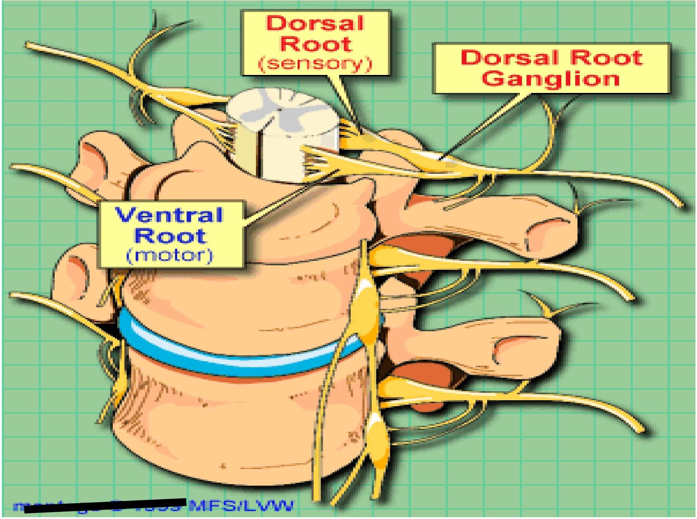
DRG
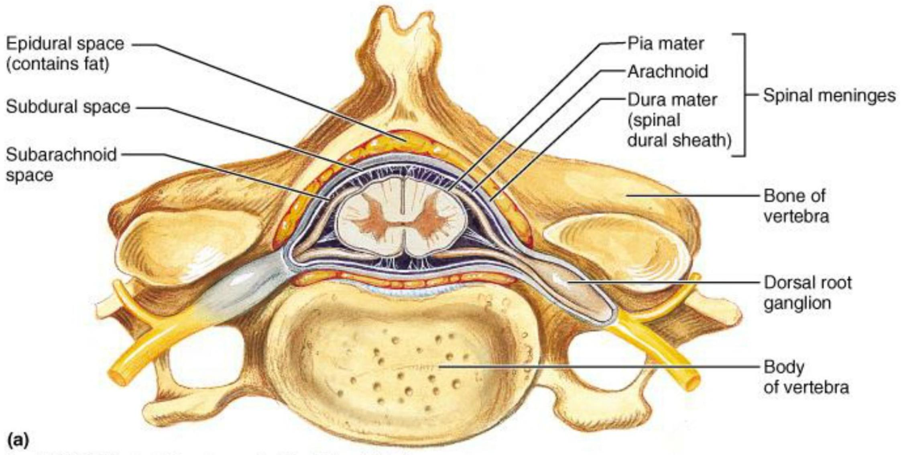
Copyright © 2001 Benjamin Cummings, an imprint of Addison Wesley Longman, Inc.
DORSAL ROOT GANGLION
- Central process gives collaterals
Lissauer's tract that enter the cord 2-3 segments below & above (BASIS OF POSTEROLATERAL TRACT of LISSAUER)
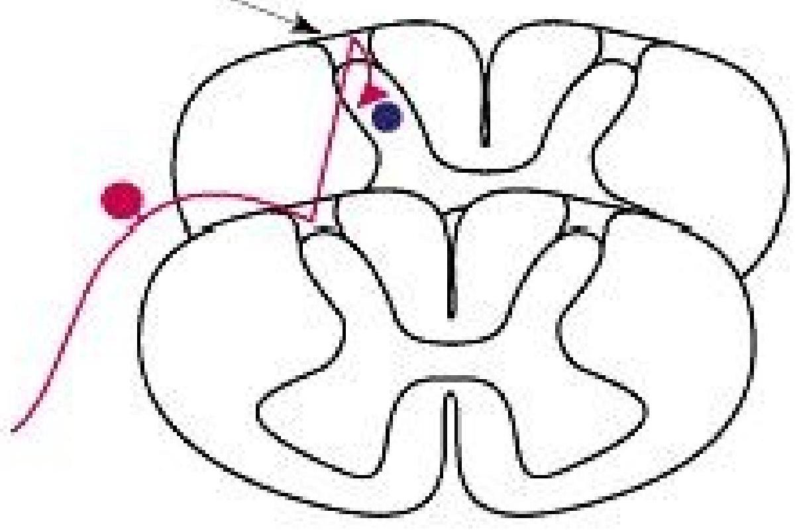DORSAL ROOT GANGLION
- Lissauer's tract is the basis for why in spinal cord injury, the sensory level is usually higher than the exact level of cord injury
DORSAL ROOT GANGLION
- If the central process contains proprioceptive information & fine touch, the direct axon goes through the dorsal column to the medulla
- Collaterals end in/on
- Lissauer's tract
- Substantia gelatinosa
- Clarke's nucleus
- Anterior horn cell (for reflexes)
DORSAL ROOT GANGLION
- If the central process contains pain, temperature & crude touch, the direct axon synapses in substantia gelatinosa on the tract neuron.
- Collaterals end in/on
- Lissauer's tract
- Anterior horn cell (for reflexes)
WHITE MATTER
- Organized into columns/funiculi
- Anterior
- Posterior
- Lateral (2)
- Funiculi contain ascending & descending tracts
ASCENDING TRACTS
- Carry sensory information to the
- Cerebral cortex (via the thalamus)
- The cerebellum (directly or via the olivary nuclei)
- Brainstem (reticular formation, tectum of midbrain etc)
SENSORY MODALITIES
- General sensation
- Touch (Fine & crude/pressure)
- Temperature
- Proprioception
- Visceral sensation
RECEPTORS of general sensation
- Fine touch: Meissner's corpuscles & free nerve endings
- Pressure: Paccinian corpuscles/Merkel cells
- Pain: Free nerve endings
- Temperature: Free nerve endings, ? Krauser's
CONCEPT OF NEURONAL ORDER in tractology
- 1st order neuron is the dorsal root ganglion neuron for spinal cord & trigeminal ganglion in the head & neck.
- The peripheral process lies in the peripheral nerve.
- 2nd & 3rd order neurons are located in the CNS
Tract synapses
- At points of synapse between neuronal orders, information is altered including
- Slowed (interneuron)
- Potentiated (excitatory neuron/transmitter)
- Inhibited (inhibitory neuron/transmitter)
- For pain mechanisms, this is the basis of the so called GATE THEORY OF PAIN
SPINAL ASCENDING TRACTS Main
- Dorsal column-Lemniscal pathway
- Spinothalamic tract
- Lateral
- Anterior
- Spinocerebellar tracts
- Dorsal spinocerebellar
- Ventral spinocerebellar
- Cuneocerebellar
SPINAL ASCENDING TRACTS Others
- Spinotectal
- Spinoreticular
DORSAL COLUMN-LEMNISCAL PATHWAY
- Receptor: Mechanoreptors
- Peripheral nerve (peripheral process of DRG neuron)
- 1st order neuron: DRG
- Central process enters the dorsal column into either fasciculus cuneatus or gracilis & ascends to the medulla oblongata.
- nd
- Level of decussation (crossing)- medulla
- as internal arcuate fibres
- Ascend as medial lemniscus in the pons & mid brain
order neuron: In medulla oblongata
- Nucleus gracilis or nucleus cuneatus

- 3rd order neuron-Thalamus
- Nucleus ventral posterior lateral (VPL)
- Project to the cerebral cortex via the internal capsule as thalamocortical radiations
- To the cerebral cortex
- Postcentral gyrus (primary sensory area)
- Broadman area 3,1,5
SPINOTHALAMIC PATHWAY
- Receptor: FNE
- Peripheral nerve (peripheral process of DRG neuron)
- 1st order neuron: DRG
- Central process enters the SUBSTANTIA GELATINOSA
- nd
- Level of decussation (crossing)- spinal cord
- Anterior to central canal & lamina X
- Ascend as spinothalamic tract to the thalamus
order neuron: In spinal cord/ S. gelatinosa
- Tract neuron
- 3rd order neuron-Thalamus
- Nucleus ventral posterior lateral (VPL)
- Project to the cerebral cortex via the internal capsule as thalamocortical radiations
- To the cerebral cortex
- Postcentral gyrus (primary sensory area)
- Broadman area 3,1,5
- Pain collaterals to the reticular formation for arousal mechanisms (spinoreticular)
DORSAL SPINOCEREBELLAR PATHWAY
- Receptor: Mechanoreceptors (T1-L2)
- Peripheral nerve (peripheral process of DRG neuron)
- 1st order neuron: DRG
- Central process gives a collateral to synapse on CLARKE'S NUCLEUS (2nd order neuron)
- Ascends to the medulla oblongata as dorsal spinocerebellar tract
3rd order neuron: In medulla Accesory olivary nuclei
- Level of decussation : NONE
- Cerebellar inputs are ipsilateral
- To the cerebellum in the inferior cerebellar peduncle as mossy fibres.
VENTRAL SPINOCEREBELLAR PATHWAY
- Receptor: Mechanoreceptors (L3 distally)
- Peripheral nerve (peripheral process of DRG neuron)
- 1st order neuron: DRG
- Level of decussation I: spinal cord
- Ascends to the medulla oblongata as ventral spinocerebellar tract
- Level of decussation II: Mid brain
- To the cerebellum in the superior cerebellar peduncle as mossy fibres.
CUNEOCEREBELLAR PATHWAY
- Receptor: Mechanoreceptors (C5-C8)
- Peripheral nerve (peripheral process of DRG neuron)
- 1st order neuron: DRG
- Central process ascends in the fasciculus cuneatus to the medulla
- In the medulla oblongata collaterals are given off to 2nd order neuron
2nd order neuron: In medulla Accesory cuneate nucleus
- Level of decussation : NONE
- To the cerebellum in the inferior cerebellar peduncle as mossy fibres.
BLOOD SUPPLY Spinal cord
- Anterior & posterior spinal arteries from vertebral arteries
- Anterior supplies anterior 2/3 of cord
- Posterior spinal arteries: posterior 1/3
BLOOD SUPPLY Spinal cord
- Radicular arteries feed the spinal arteries (esp. anterior)
- These are from
- Ascending cervical artery in neck
- Posterior intercostal arteries in thoracic region
- Upper lumbar arteries in upper lumbar region
- ARTERIA RADICULAR MAGNA of Adamkiewitz is a large raicular artery that arises anywhere between T10 & L2
- Watershed area around T2-T3
Muchos gracias estudiantes
Muchos gracias estudiantes
CORD LESIONS
- Trauma
- Tumours
- Vascular
- Infections
CORD SYNDROMES
- Anterior
- Posterior
- Lateral (Brown-Sequard)
- Central (Syringomyelia/Ependimomas)
- Conus medullaris
- Cauda equina
- Conus-cauda
Brown-Sequard Syndrome of Spinal Cord Hemisection
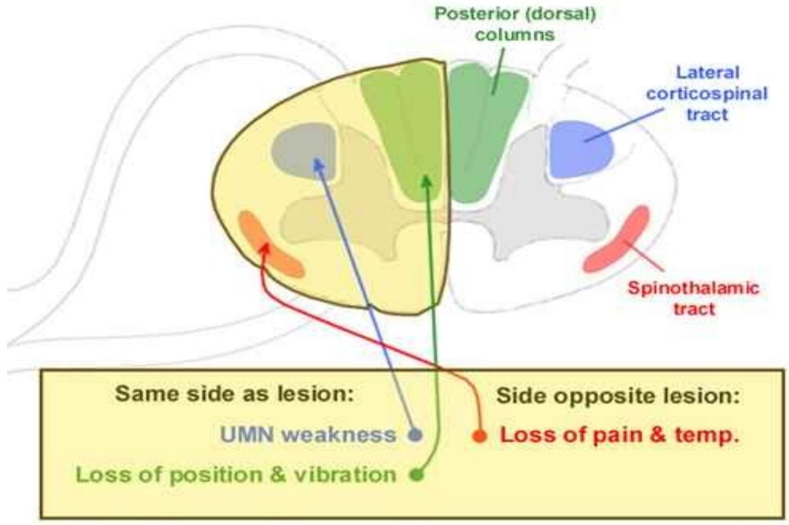
SYRINGOMYELIA
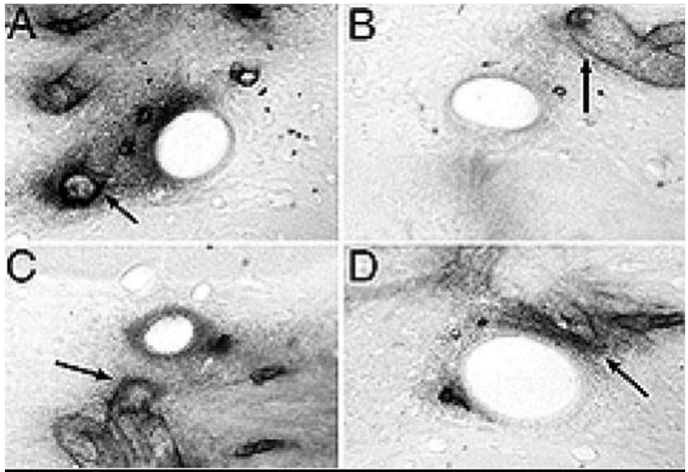
Objectives
- Defined spinal cord & described it to have 2 enlargements & a conus
- Parts include cervical thoracic lumbar & sacral
- Organization of spinal grey into Rexed laminae
- Organization of white matter where ST, DC & LCS are most important in clinical diagnosis
- Cord lesions: Presentations of various cord lesions
DIO TI BENEDICA
DIO TI BENEDICA